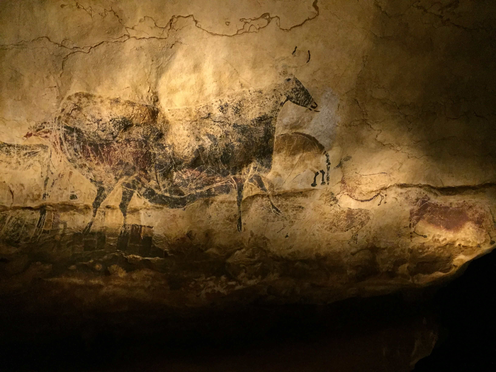

c. 2,6 millones de años – c. 3300 a. C.
Prehistoria
Casi toda la historia humana ocurrió antes de que existiera la escritura.

Los primeros humanos
Los primeros homininos aparecieron en África hace millones de años. Hace unos 2,6 millones de años ya se tallaban herramientas de piedra, y el fuego se dominó mucho antes de que existiera nuestra especie. Homo sapiens surgió en África hace unos 300.000 años y desde allí se extendió por todos los continentes, conviviendo un tiempo con otros humanos como los neandertales.
Cazadores, artistas y agricultores
Durante el Paleolítico se vivía de la caza y la recolección en pequeños grupos nómadas. De esa época son las pinturas de cuevas como Altamira, en Cantabria. Hacia el 10000 a. C., en Oriente Próximo, comenzó el Neolítico: la agricultura y la ganadería permitieron asentarse en aldeas, fabricar cerámica y almacenar alimentos, y con ello surgieron la propiedad y las diferencias sociales.
Metales y primeras ciudades
Llegaron después las edades del Cobre, del Bronce y del Hierro, con comercio a larga distancia y grandes monumentos de piedra, como Stonehenge o los dólmenes de Antequera, en Málaga. Hacia el 3300 a. C. aparecieron en Mesopotamia las primeras ciudades y la escritura. Por convención, ahí termina la prehistoria y empieza la historia.
- Hace c. 2,6 millones de años Primeras herramientas de piedra
- Hace c. 300.000 años Aparece Homo sapiens en África
- c. 10000 a. C. Comienza el Neolítico: agricultura y ganadería